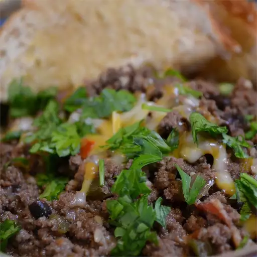

Venison Chili

Description
This is an excellent chili recipe for game meats. You can easily substitute venison with buffalo or boar as well.
Ingredients
- 4 tablespoons unsalted butter
- 1 red onion, chopped
- 4 cloves garlic, minced
- 4 tablespoons dark brown sugar
- 3 cups red wine
- 4 tablespoons red wine vinegar
- 4 tablespoons tomato paste
- 4 cups low-sodium chicken broth
- 1 teaspoon ground cumin
- ½ teaspoon cayenne pepper
- ½ teaspoon chili powder
- 2 tablespoons chopped fresh cilantro
- salt to taste
- 4 tablespoons canola oil
- 10 slices cooked bacon, diced
- 2 pounds venison stew meat, trimmed and finely diced
- 2 cups black beans, cooked and drained
Steps
- Melt the butter in a large pot over medium heat. Stir in the onion and garlic, and saute for 3 to 4 minutes.
Stir in the brown sugar and saute for 2 to 3 more minutes. Then stir in the red wine,
vinegar, tomato paste, chicken stock, cumin, cayenne pepper, chili powder, cilantro and salt. Simmer for 30
to 35 minutes, or until the mixture is reduced by about
half.
- Meanwhile, heat the oil in a large skillet over medium-high heat. Stir in the bacon and fry for 3 to 4
minutes, or until the bacon is browned. Move the bacon to one side of the skillet and add the venison to the
empty side of the skillet. Season the meat with salt to taste and saute the meat for 15 minutes, or until
well browned. Stir in the beans and toss all together. Transfer this mixture to the simmering pot.
- Mix everything together thoroughly and let simmer for about 20 more minutes.